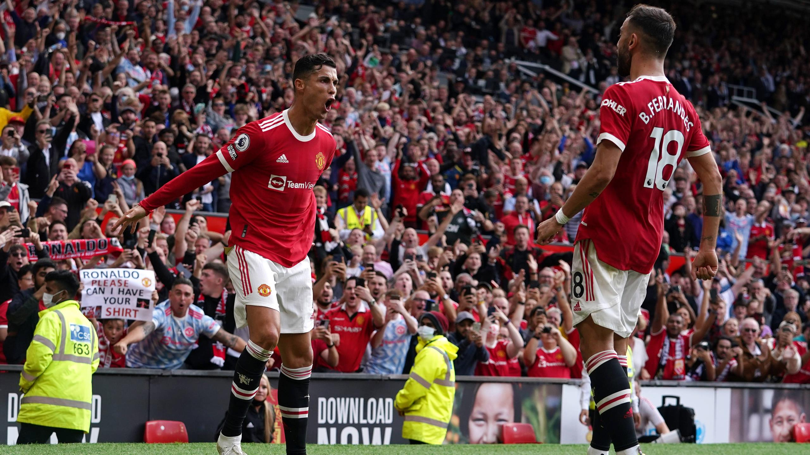
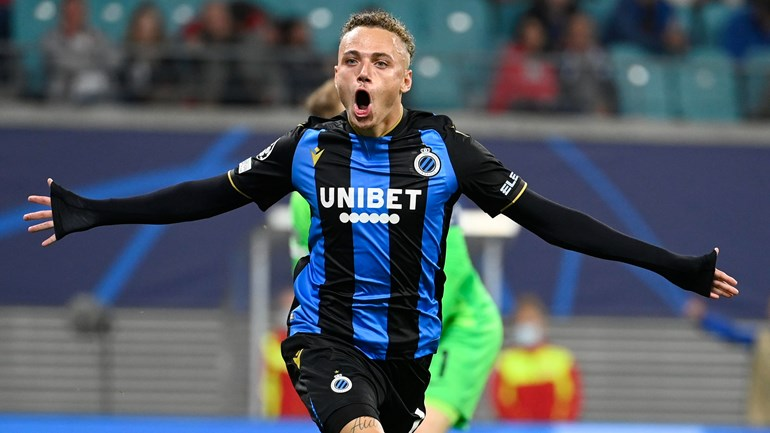

"The Beautiful Game"
De eerste sport die ik deed was zwemmen. Ik begon toen ik 6 jaar was.
Dit heb ik een paar jaar gedaan tot ik moest kiezen tussen competitiezwemmen en reacreatief zwemmen.
Ik koos voor reacreatief omdat we daar zouden leren mensen redden, etc.
Als we dan uiteindelijk gingen zwemmen, moesten we steeds gewoon de hele les baantjes trekken.
Ik werd het beu en stopte dus. Op 12-jarige leeftijd ging ik opzoek naar een andere sport.
Zo ben ik beginnen voetballen.
K.H.O.H
Toen ik zocht naar een club wou ik niet in Lot voetballen omdat ze daar serieus aan het "verfransen"
waren.
Zo kwam ik terecht in "Koninklijk Hogerop Huizingen".
Ondertussen speel ik er al 6 jaar. Sinds vorig jaar zit ik bij de reserven.
Dit is te wijten aan het tekort in trainers. Hierdoor is de jeugd maar tot 17 jaar.
Vervolgens moet je dus al naar volwassenvoetbal overschakelen.

Voetbalfan
Ik speel niet alleen voetbal, ook ben ik een grote fan van voetbal op topniveau.
Manchester United
Ik ben fan van 'Manchester United', de ploeg met de meeste titels in de Engelse 'Premier League' en maar liefst 6 keer de Champions League.

Club Brugge
Van kleins af aan ben ik een Club Brugge fan, meegekregen van mijn vader.
Zij zijn ook de huidige kampioen in België.
